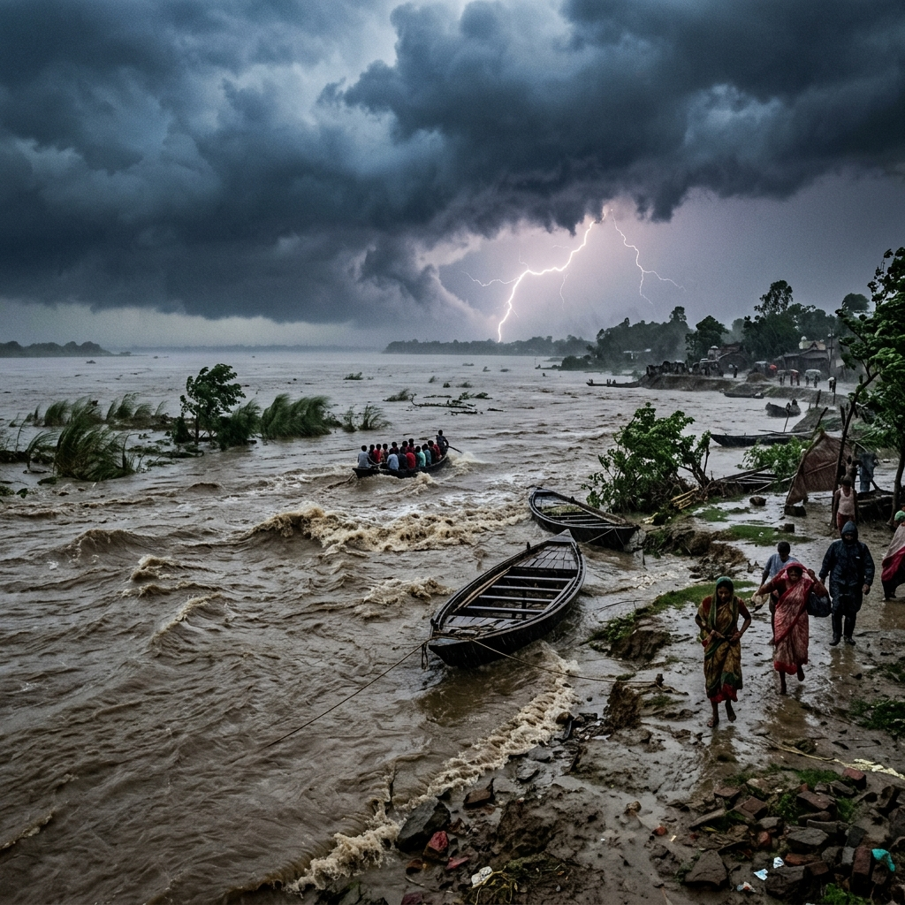
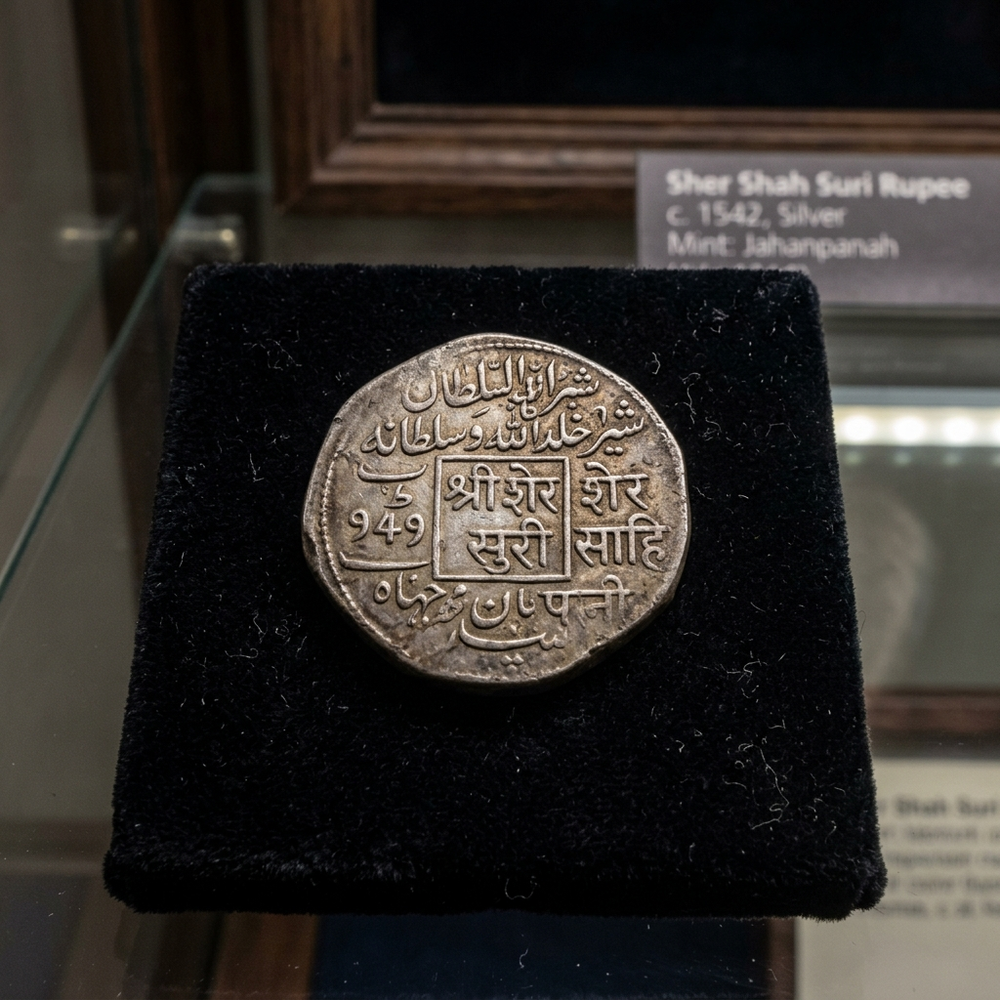

Battle of Chausa Explorer
Explore the historic banks of the Karmanasa and Ganges. Relive the tactical masterclass where Sher Shah Suri outmaneuvered Humayun, establishing the Suri dynasty and forcing the Mughals into exile.
The Outmaneuvered Emperor's Retreat
In 1538, Mughal Emperor Humayun marched into Bengal to suppress the growing power of Sher Khan (later Sher Shah Suri). Humayun spent months in Gaur, Bengal, celebrating his victories. Sher Shah Suri utilized this delay to cut off Humayun's lines of communication and supply, capturing key strongholds along the Ganges route in Bihar and Uttar Pradesh.
Realizing the threat, Humayun began a sluggish retreat towards Agra during the heat of the summer. The two armies met at Chausa, near Buxar, on the banks of the Ganges. For three months, both forces sat in a tense stalemate, while Humayun attempted to negotiate a settlement.
🏛️ At a Glance
- Combatants: Mughal Empire vs. Sur Empire (Afghan forces).
- Location: Chausa, near Buxar, Bihar.
- Outcome: Decisive Suri victory; Humayun escapes to Agra.
- Legacy: Sher Khan crowns himself Sher Shah; Mughals temporarily exiled.
Commanders of Chausa
The encounter pitted the sovereign of Delhi against a veteran military genius and reformer.
Humayun
The second Mughal Emperor, who was caught unprepared by a surprise attack, losing his army, his royal treasury, and nearly drowning in the Ganges.
Sher Shah Suri
The brilliant Afghan ruler of Bihar. Known for his tactical flexibility, administrative prowess, and masterly use of deceit to defeat superior forces.
Nizam (Water-Carrier)
The humble sakka (water-carrier) who inflated his leather water-bag (mashaq) to save the drowning Emperor Humayun from the Ganges floodwaters.
📈 Tactical Elements
- Deceptive Negotiations: Sher Shah entered into peace talks, convincing Humayun that a retreat pact was settled.
- Pre-dawn Surprise Strike: Suri forces launched a silent night-march raid, catching the Mughal camp asleep.
- Monsoon Positioning: Humayun placed his camp on low-lying ground, which flooded when the early monsoon rains arrived.
- Karmanasa River Trap: The rising waters cut off the Mughal retreat routes, forcing many to drown.
The Pre-Dawn Surprise Raid
Sher Shah Suri realized that in a direct, open-field conflict, Humayun's disciplined artillery division would decimate the Afghan forces. He resolved to bypass the cannons. Sher Shah feigned peace talks and agreed to sign a treaty, causing the Mughal officers to relax their guard.
On the night of 25 June 1539, Sher Shah's forces secretly marched out, pretending to head to another campaign. In the pre-dawn darkness of 26 June, they turned back and launched a three-pronged surprise assault. The Mughal camp was thrown into chaos, and many soldiers were cut down before they could form lines.
The Flight of the Emperor and Rise of the Suris
The defeat at Chausa shattered Humayun's authority and changed the course of Indian history for a decade and a half.
Sovereignty Declared
Sher Khan assumed the title of *Sher Shah* and minted silver coins in his own name, establishing the Sur Empire.
Humayun's Flight
Humayun barely escaped to Agra, later suffering another defeat at Kannauj (1540), forcing him into a 15-year exile in Persia.
Administrative Legacy
Sher Shah went on to introduce the *Rupiya* coin, build the Grand Trunk Road, and reform the tax collection systems.
Chronology of the Chausa Campaign
Follow the timeline of events leading to the fateful night of June 1539.
Humayun in Bengal
Mughal forces occupy Gaur, Bengal, while Sher Shah captures key cities upstream, severing Humayun's supplies.
Stalemate at Chausa
Humayun retreats and confronts Sher Shah's forces at Chausa. A three-month face-off begins.
False Treaty
Sher Shah signs a peace agreement, lowering Mughal troop vigilance, and plans a night march.
The Night Raid
Suri forces launch a pre-dawn attack, routing the Mughals. Humayun escapes across the Ganges.
Museum Highlights of the Suri-Mughal War
Explore the river campaign sites and historical coins associated with the conflict.

Monsoon Ganges River
The swift river currents where Humayun was saved by the water-carrier.

Sher Shah Suri Coinage
The silver rupee coin introduced during the Sur Empire.

Mughal Matchlocks & Weapons
Firearms and matchlocks used by Humayun's royal forces.
📚 References & Further Reading
- Sarwani, Abbas Khan (c. 1580). Tarikh-i-Sher Shahi (The History of Sher Shah).
- Aftabchi, Jauhar (c. 1587). Tadhkirat al-Waqiat (Private Memoirs of Humayun).
- Chandra, Satish (2003). Medieval India: From Sultanat to the Mughals (Part Two). Har-Anand Publications.
- Qanungo, Kalika Ranjan (1921). Sher Shah: A Critical Study based on Original Sources. Kar, Majumder & Co.